SAP CURSO
-
Systeme Anwendungen und Produkte que significa en español 'sistemas, aplicaciones y productos'.
-
SAP ERP es un software de planificación de recursos empresariales desarrollado por la compañía alemana SAP SE. SAP ERP incorpora las funciones empresariales claves de una organización.
-
Así, si tuviéramos que definir qué es SAP diríamos que es un software ERP (Enterprise Resource Planning), que permite planificar y gestionar los recursos de todas las áreas de la empresa: desde logística a contabilidad, pasando por el departamento comercial y de márketing, finanzas, producción, gestión de proyectos, de la calidad, mantenimiento o dirección y administración general.
ERP
-
Enterprise Resource Planning, planificación de recursos empresariales.
-
Es un conjunto de programas integrados que apoya las principales actividades organizacionales tales como finanza, contabilidad, logística, producción, ventas y recursos humanos.
-
Caracteristicas:
- Procesos estandatizados
- En linea
- Bases de datos unica
- Integrar todos los datos y procesos en un sistema único.
- Configurable
- Modular
SAP
- System Applications and Products in data processing. Sistema, aplicaciones y productos en el procesamiento de datos.
ARQUITECTURA
-
Estructura cliente - servidor
-
Estrucutra de ambiente de desarrollo - calidad - producción.
-
SAP GUI es el programa que se instala el ordenador para porder acceder en remoto al servidor en una empresa.
-
SAP LOGON es el programa que se utiliza para entrar o loguearse en SAP. Es como el iconito al clicar dos veces para conectarse y elegir a que servidor conectarse.
MODULOS SAP
-
Formado por varios modulos interconectados entre ellos y que si hay datos en uno se referencian en los otros automaticamente.
-
Modulos:
- FI (Finanzas)
- CO (controling de costes)
- MM (Materiales)
- SD (venta y distribucion)
- PP ( Produccion)
- PM (mantemiento planta)
- QM (calidad)
- PS (proyectos)
- HR (rrhh)
- ABAP (programacion y desarrollo)
CONCEPTOS BASICOS
-
Customizing: configuración que representa la estructura legal y los procesos de negocio de la empresa.
-
Unidad Organizativa: representa la estructura jerarquica de la empresa en el sistema.
-
Datos maestros: datos requeridos para realizar transacciones del proceso en el sistema(clientes, materiales, proveedores...)
-
Batch Input: para la entrada de grandes cantidades de registros.
-
Documentos: cada transacción registra datos en la bbdd, crea un documento con id unico.
-
Transacción: procesos de negocio en el sistema SAP.
-
Sistemas de información: transacciones guardadas.
-
Z: programas desarrollados aparte.
-
MODO SAP: cada pantalla del SAP.
-
WORKFLOW: flujo de trabajo para optimizar procesos.
-
DATOS MAESTROS: info que cambia poco y son campos obligatorios para rellenar(clientes, precios, proveedores..)
ESTRUCTURA ORGANIZATIVA
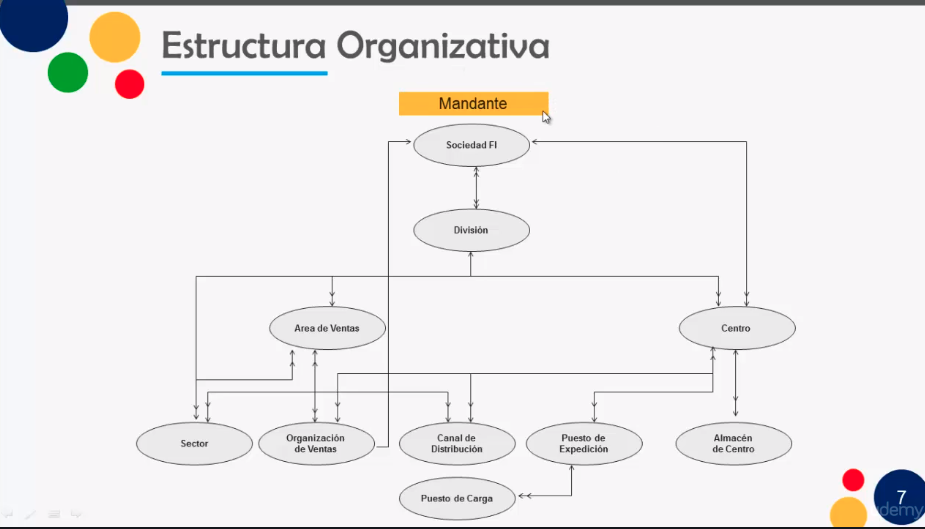
CONEXION A SAP
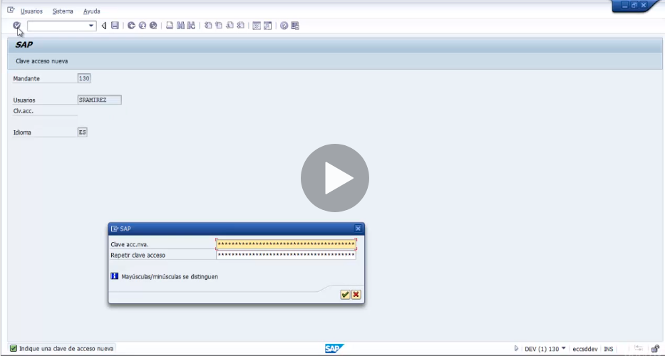
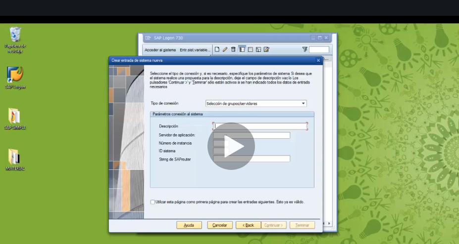
PANTALLA EASSY SAP
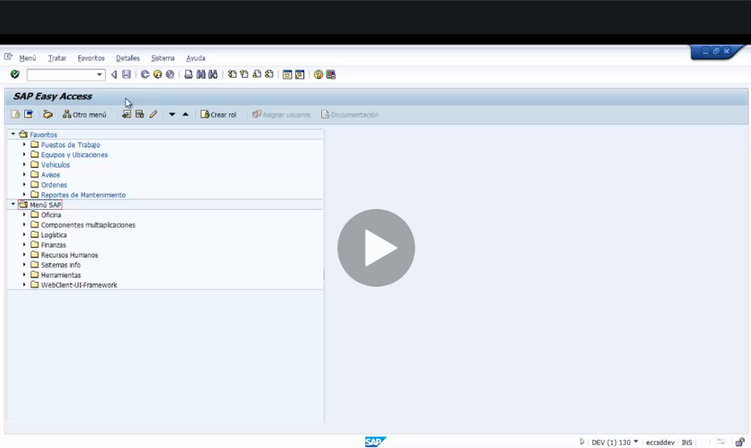
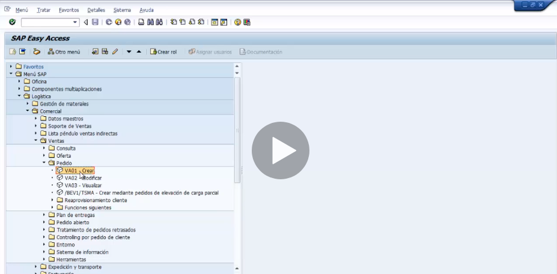
FAVORITOS
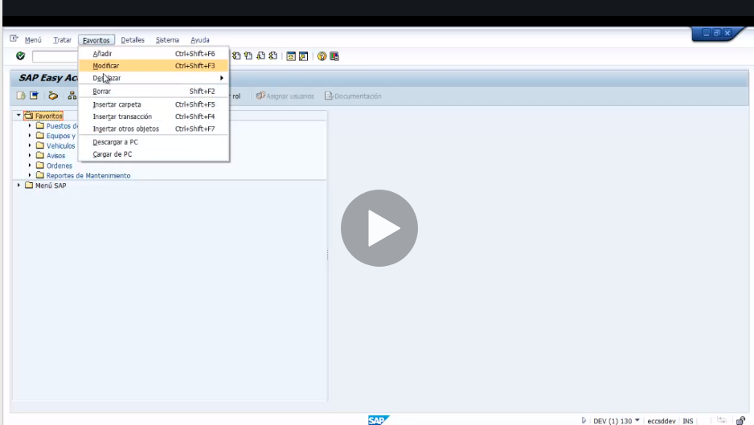
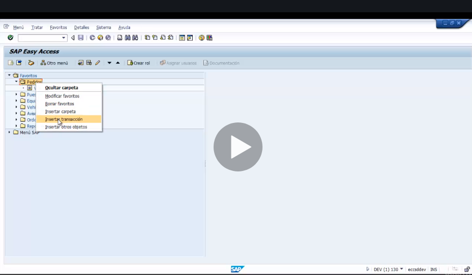
BARRA HERRAMIENTAS
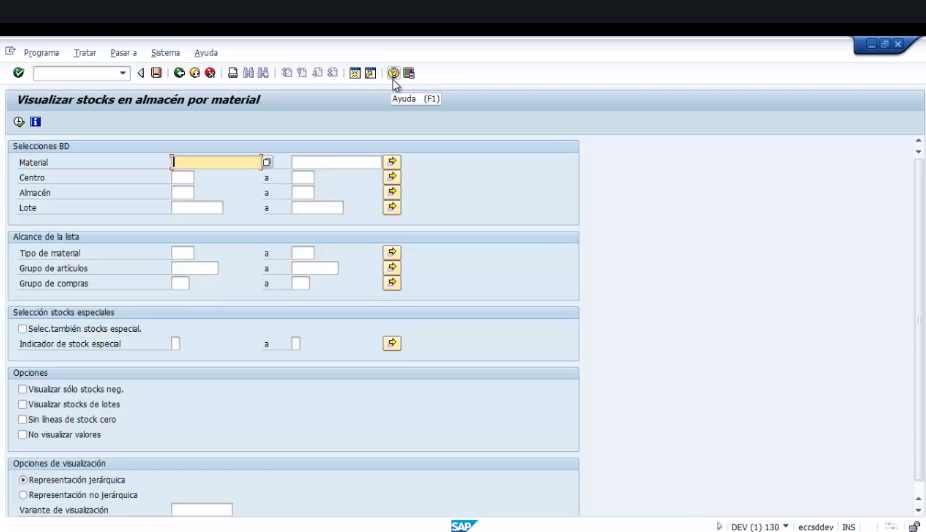
BARRA DE MENU
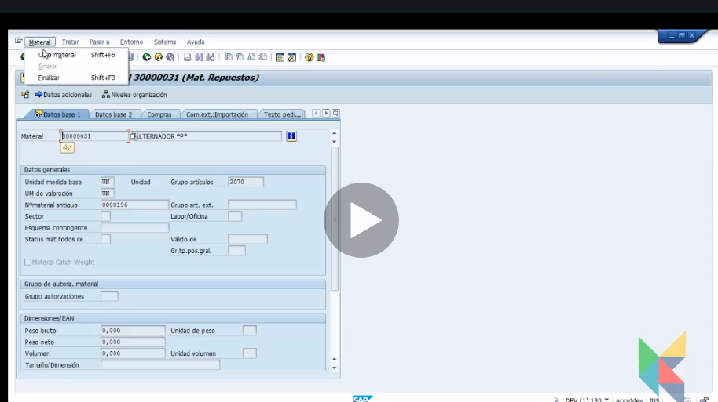
MODOS
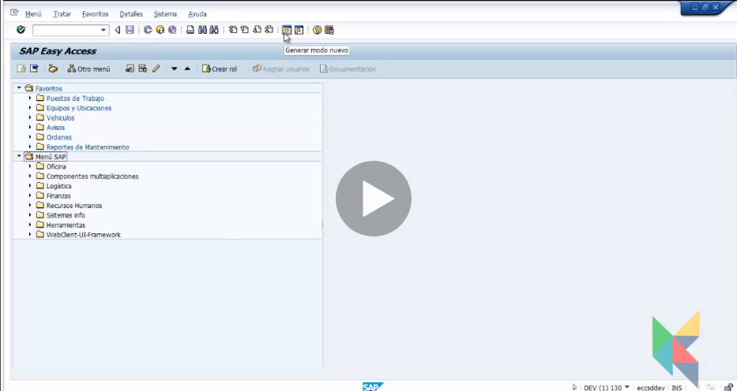
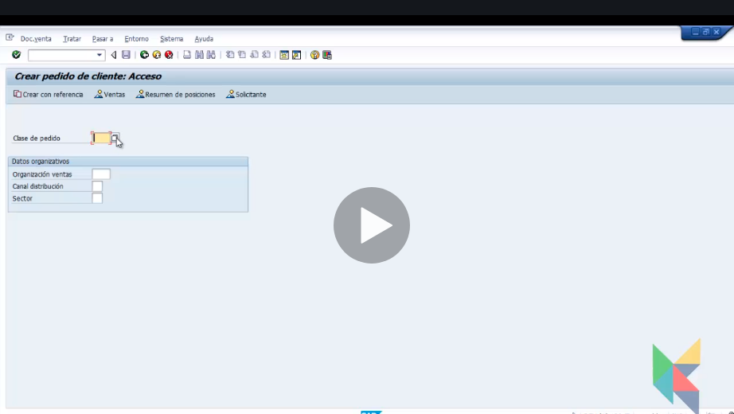
COMANDOS DE USO FRECUENTE
- En el cuadro de busqueda:
- /N - termina la transacción
- /O - ver modos abiertos
- /I - cierra la transaccion abierta
- /Ntransacción - lleva a la trans indicada y cierra la actual.
- /NEND - salir del sistema pero avisa de cosas abiertas.
- /NEX - cierra totalmente
CAMPOS DIFERENTES
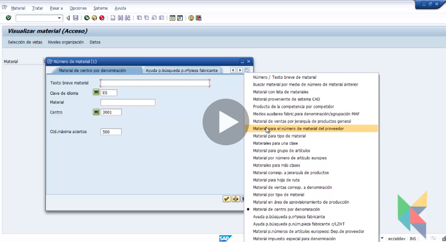